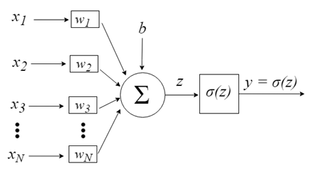
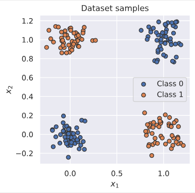
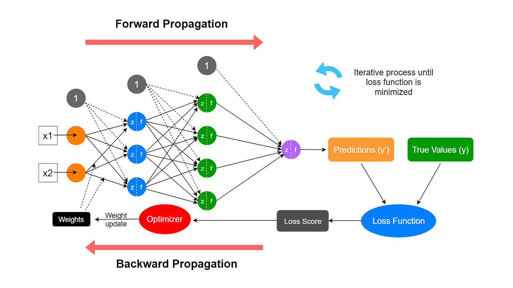
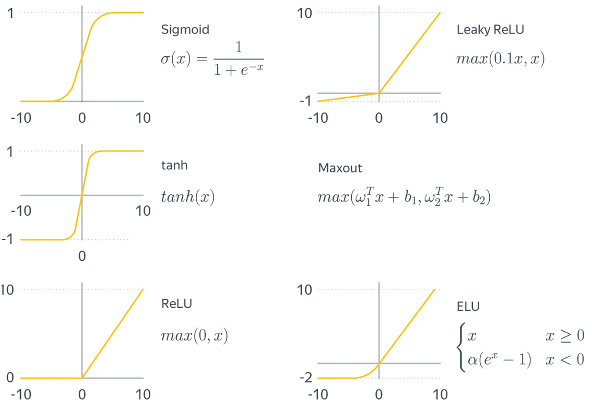

Лекция №1. Основные понятия глубокого обучения
Интуитивное понимание
От представления данных зависит вероятность успеха решения задачи машинного обучения. Например, когда мы используем логистическую регрессию для рекомендации кесарево сечения для роженицы, мы не исследуем пациентку напрямую. Вместо этого мы узнаем о пациентке несколько важных сведений о её здоровье, например, о наличии или отсутствии рубца на матке. Каждый фрагмент информации, включенный в представление пациента, называется признаком.
Для многих задач можно придумать, “сконструировать” качественное признаковое описание, которое позволит решить её с помощью алгоритмов классического машинного обучения.
В то же время для множества задач составить признаковое описание не представляется возможным. В качестве примера можно рассмотреть задачу классификации котят манула и обычной домашней кошки. Для человека, знакомого с этими животными, не представляет труда отличить одного от другого, но если мы попросим объяснить его, как именно он это сделал, то он, скорее всего, затруднится ответить на этот вопрос. Так мы можем предположить о существовании скрытых признаков, которые объективно существуют в реальности, но крайне сложны для формулирования в понятном для человека виде.
Чуть подробнее о скрытых признаках
Скрытые признаки часто не являются непосредственно наблюдаемыми величинами. Вместо этого они могут существовать как ненаблюдаемые объекты или ненаблюдаемые силы в физическом мире, которые влияют на наблюдаемые величины. Они также могут существовать как обобщенные паттерны и образы в человеческом разуме, которые дают полезные упрощающие объяснения или предполагаемые причины наблюдаемых явлений. Их можно рассматривать как концепции или абстракции, которые помогают нам понять смысл богатого разнообразия мира информации.
В этом случае возникает идея применять машинное обучение не только для поиска отображения признакового пространства в пространство целевой переменной (таргета), но и для поиска самого признакового представления (скрытых признаков). Выученное представление часто оказывается более информативным и релевантным для решения задачи, чем составленное человеком.
Глубокое обучение предлагает эффективный способ решения задачи обучения представлений (скрытых признаков). Центральным алгоритмом глубокого обучения является многослойный персептрон.
Персептрон
(def) Персептрон – это простейшая математическая модель восприятия информации мозгом человека.

Рассмотрим персептрон с \(N\) входами и одним выходом, \(y\), которые связаны следующими вычислениями:
Введем \(\sigma(z)\) – нелинейную функция активации, тогда
Другими словами, мы берем взвешенную сумму входов и подаем её на нелинейную функцию активации \(\sigma\). Функция \(f\) называется линейным слоем, потому что она вычисляет линейную функцию входов, \(w^Tx\), плюс смещение, \(b\). Функция \(\sigma\) называется функцией активации, потому что она "решает", активируется ли нейрон.
Персептрон на примере задачи XOR
Постановка задачи
Рассмотрим входные данные вила \(x=(x_1,x_2)\in \{0,1 \}^2\) и целевую функцию:
Точки данных: \((0,0) \mapsto 0\), \((0, 1) \mapsto 1\), \((1, 0) \mapsto 1\), \((1, 1) \mapsto 0\)
Геометрически это вершины единичного квадрата: положительные примеры — диагональная пара \((0,1)\) и \((1,0)\).
Если посмотреть на графическое изображение такой функции, то становится интуитивно понятно, что представленные классы линейно не разделить.

Ограничения линейной модели
Пусть существует есть линейный классификатор:
Для каждой точки наших данных знак должен совпадать с “меткой класса”:
- для метки 1 \(z(x)\) должен быть больше нуля (\(z(x) > 0\))
- для метки 0 \(z(x)\) должен быть меньше нуля (\(z(x) < 0\))
Это утверждение переводится в систему неравенств:
- Сложим второе и третье выражение: \((w_1+b)+(w_2+b)>0 \Rightarrow w_1+w_2+2b>0\)
- Сравним это с четверым: \(w_1 + w_2 + b < 0\)
- Вычтем четвертое из результата п.1: \((w_1+w_2+2b) - (w_1 + w_2 + b) > 0 - 0 \Rightarrow b > 0\)
Мы получили противоречие с первым неравенством из нашей системы.
Нелинейное решение с помощью персептрона
Рассмотрим персептрон с одним скрытым слоем и функцией активацией \(g(z) = \text{ReLU} = \max(0, z)\)
Именно нелинейность переводит точки в новое представление \(h\), где есть возможность линейно разделить классы.
В явном виде решение будет выглядеть следующим образом:
Рассмотрим его по шагам.
(1) Матрицы всех входов, взятых по строкам:
(2) Перемножение матриц:
(3) Прибавляем смещение:
(4) Применяем поэлементно функцию активации:
(5) Выход сети:
Итого получаем правильные ответы для задачи XOR.
Прямой и обратный проход
(def) Применение нейронной сети к данным (вычисление выхода по заданному входу) часто называют прямым проходом, или же forward propagation (forward pass).
(def) При обратном проходе, или же backward propagation (backward pass), информация (обычно об ошибке предсказания целевого представления) движется от финального представления (а чаще даже от функции потерь) к исходному через все преобразования.
Многослойный персептрон
(def) Линейный слой (linear dense, linear layer) – линейное преобразование над входящими данными, где матрица W и вектор b – обучаемые параметры: \(x \mapsto Wx + b, \space (x \in \mathbb{R}^{d \times 1}, W^{k \times d}, b \in \mathbb{R}^{k \times 1})\)
(def) Многослойный персептрон (multilayer perceptron, MLP) – нейросеть, в которой есть больше двух линейных слоев и различные функции активации.

Градиентное обучение персептрона → Обратное распространение ошибки
Идея градиентного спуска
Мы минимизируем функцию потерь \(C(\theta)\), где \(\theta=\{W^{l},\,b^{l}\}_{l=1}^{L}\) — все параметры сети. Градиентный спуск делает малые шаги в сторону убывания функции потерь:\(\theta^{(k)}: \leftarrow \theta^{(k-1)} - \eta\,\nabla_{\theta}\), где \(k\) – номер шага градиентного спуска.
Говоря простыми словами, мы хотим узнать, как каждый вес и смещение влияет на \(C\), а потом подкорректировать их на величину, пропорциональную этому влиянию.
В чем сложность вычисления градиента для нейронной сети?
Рассмотрим линейную регрессию вида \(\hat{y} = w^Tx + b\) и оптимизируем функцию потерь MSE, \(||y - Xw||^2_2 \rightarrow \min\limits_{w}\). Мы можем легко для нее посчитать градиент:
Сможем ли мы также легко и непринужденно сделать с нейронной сетью, помня, что она представляет из себя сложную функцию?
Здесь очевидно возникают трудности и нам придется научиться вычислять частные производные вида \(\partial C / \partial w\) (по весам) и \(\partial C / \partial b\) (по смещениям).
Частная производная по одному весу
Пусть \(z^{l}_j = \sum_k w^{l}_{jk} a^{\,l-1}_k + b^{l}_j\). Тогда для конкретного веса \(w^{l}_{jk}\) по правилам расчета частных производных:
Это выражение можно упростить, если ввести локальную ошибку нейрона:
И следовательно:
То есть "вклад" веса в потери равен произведению входа в нейрон (\(a^{\,l-1}_k\)) на локальный ошибку нейрона (\(\delta_{j}^{l}\)). Эти выражения будут справедливы для любого слоя \(l\):
Выражения для слоев
Для последнего слоя она рассчитывается следующим образом (в случае если функция потерь это MSE):
где \(\odot\) – произведение Адамара (поэлеметное).
На выходном слое мы можем напрямую связать \(\delta^L\) с функцией потерь. Для скрытых слоёв важно понять, как ошибка передаётся назад.
По правилу расчета частных производных:
Но \(\partial C / \partial a^{l}\) вычисляется через следующий слой:
Таким образом, получаем рекуррентную формулу:
Четыре формулы алгоритма:
Теперь мы можем выписать все шаги:
- Ошибка на выходном слое (для MSE):
$$ \delta^{\,L} = (a^{\,L} - y) \odot \sigma'(z^{\,L}) $$ 2. Ошибка на скрытых слоях: $$ \delta^{\,l} = \bigl((W^{\,l+1})^\top \delta^{\,l+1}\bigr) \odot \sigma'(z^{\,l}), \qquad l = L-1, \dots, 1 $$ 3. Градиент по весам:
$$ \frac{\partial C}{\partial W^{l}} = \delta^{l}\,(a^{\,l-1})^T $$ 4. Градиент по смещениям:
$$ \frac{\partial C}{\partial b^{\,l}} = \delta^{\,l} $$
Алгоритм по шагам
- Прямой проход: для входа \(x\) вычисляем все \(z^l\) и \(a^l\) вплоть до выхода.
- Ошибка на выходе: вычисляем \(\delta^L\) из функции потерь.
- Обратный проход: для \(l=L-1,\dots,1\) рекурсивно считаем \(\delta^l\).
- Градиенты: вычисляем \(\partial C/\partial W^l и \partial C/\partial b^l.\)
- Обновление параметров: \(W^l \leftarrow W^l - \eta \cdot \partial C/\partial W^l, b^l \leftarrow b^l - \eta \cdot \partial C/\partial b^l\)
Функции активации
Для красоты приведем формальное определение функции активации:
(def) Функция активации – нелинейная функция вещественного переменного, определяющая выходной сигнал слоя в нейронной сети.
Для чего нужна функция активации? Короткий и емкий ответ такой: в случае если мы не будем ставить функции активации после слоев, то нейронная сеть будет представлять собой одно линейное преобразование.
Популярные функции активации:
- Сигмоида, \(\sigma(x) = \frac{1}{1 + \exp{-x}}\)
- Гиперболический тангенс, \(tanh(x)\)
- ReLU, \(\text{ReLU} = \max(0, x)\)
- Leaky ReLU,\(\text{Leaky ReLU} = \max(\alpha \cdot x, x), \alpha = \text{const}, 0 < \alpha < 1\)

Инициализация весов
Значительную роль в успехе обучения нейронной сети играет алгоритм инициализации весов (её параметров). Рассмотрим несколько возможных методов инициализации.
Инициализация нулем или константным значением
Рассмотрим сеть с двумя слоями, в которой происходят следующие вычисления при прямом проходе:
- \(X_2 = X_1 W\), где \(W=0\) — матрица весов, которую инициализировали нулями;
- \(X_3=h(X_2) = h(0)\), где h — поэлементное применение функции активации;
- \(X_4=X_3U\), где \(U=0\) — ещё одна инициализированная нулями матрица весов.
Если для этого вычисления составить уравнения обратного прохода, то легко увидеть, что обновления весов происходить не будет, а вместе с ним и обучения сети
Инициализация случайными числами
Допустим веса инициализированы случайным образом из нормального распределения, т.е. \(\mathcal{N}(0, \sigma^2)\).
Пусть теперь на вход линейному слою с весами \(w\) размерности \(n_in\) пришел вектор \(x\) аналогичной размерности.
Замечание. Можем считать, что мы рассматриваем лишь одну компоненту следующего промежуточного представления \(z\).
Все компоненты \(x\) распределены одинаковым образом и обладают нулевым средним. Тогда дисперсия их произведения y имеет вид:
Т.к. первое и второе слагаемое равны нулю, то дисперсию результата (\(y\)) можно выразить следующим образом:
где \(D(x)\) — это дисперсия любой компоненты \(x\), а \(D(w)=\sigma^2\)— дисперсия компоненты w.
Важные выводы, которые следуют из этой выкладки:
- дисперсия результата линейно зависит от дисперсии входных данных с коэффициентом \(n_{in} D(w)\)
- увеличение дисперсии промежуточных представлений (активаций) приводит к вычислительным ошибкам и негативно влияет на обучение
- снижение дисперсии может привести к нулевым промежуточным представлениям, что также негативно влияет на обучение
Отсюда логично предположить, что для стабилизации обучения мы можем инициализировать веса с помощью другого распределения. Например, таким распределением может быть \(\forall i, w_i \sim \mathcal{N} (0, \frac{1}{n_{in}})\).
Инициализация Xavier & Normalized Xavier
Выкладки, рассмотренные в предыдущем разделе, можно провести и в обратную сторону. Дисперсия градиента при этом меняется в \(n_{out}D(w)\) раз, где \(n_{out}\) — размерность следующего за \(x\) промежуточного представления.
И если мы хотим, чтобы сохранялись дисперсии и промежуточных представлений, и градиентов, у нас возникают сразу два ограничения:
и
Легко заметить, что оба этих ограничения могут быть выполнены только в случае, когда размерность пространства не меняется при отображении, что случается далеко не всегда.
В работе Understanding the difficulty of training deep feedforward neural networks за авторством Xavier Glorot и Yoshua Bengio в качестве компромисса предлагается использовать параметры из распределения с дисперсией:
В случае использования равномерного распределения \(U\) для инициализации весов с учетом описанных выше ограничений мы получим normalized Xavier initialization:
Инициализация Kaiming
Предыдущие методы инициализации хорошо подходят для симметричных функций активаций, таких как сигмоида или гиперболический тангенс. Однако само использование таких функций чревато сложностями в обучении, такими как затухание градиентов, о которым мы поговорим подробнее позднее.
Сейчас повсеместно используются функция активация ReLU. Рассмотрим алгоритм инициализации, рассчитанный под эту функцию. Пусть представление на входе было получено после применения данной функции активации к предыдущему представлению zprevzprev:
где \(z_{prev}\), в свою очередь, — это выход предыдущего линейного слоя с нулевым средним для каждой компоненты весов, то есть, в частности, \(E(z_{prev})=0\).
В таком случае дисперсия выхода следующего линейного слоя примет вид:
В данном случае первый член не может быть проигнорирован, так как ReLU имеет ассиметричную область значений, а значит, распределения \(x_i\) будут смещёнными.
С учетом того, что \(D(x)=\mathbb{E}[x_i^2]−\mathbb{E}[x_i]\), выражение выше примет итоговый вид:
С учётом поведения ReLU и того, что \(E(z_{prev})=0\), можно сказать, что
то есть
Получается, что использование ReLU` приводит к необходимости инициализировать веса из распределения, чья дисперсия удовлетворяет следующему ограничению:
Например, подходит нормальное распределение \(N(0,2n_{in})\)
Список использованных источников
- Deep Learning Book: Introduction, Deep Feedforward Networks
- Курс от MIT: 1. Neural Networks
- 3blue1brown (Grant Sanderson): Neural Networks (Video, Texts)
- Michael Nielsen: Networks and Deep Learning
- Яндекс ШАД: параграфы 5.2, 5.3, 5.4